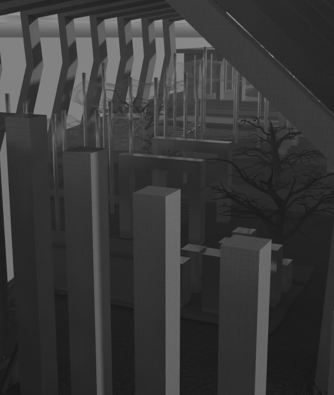
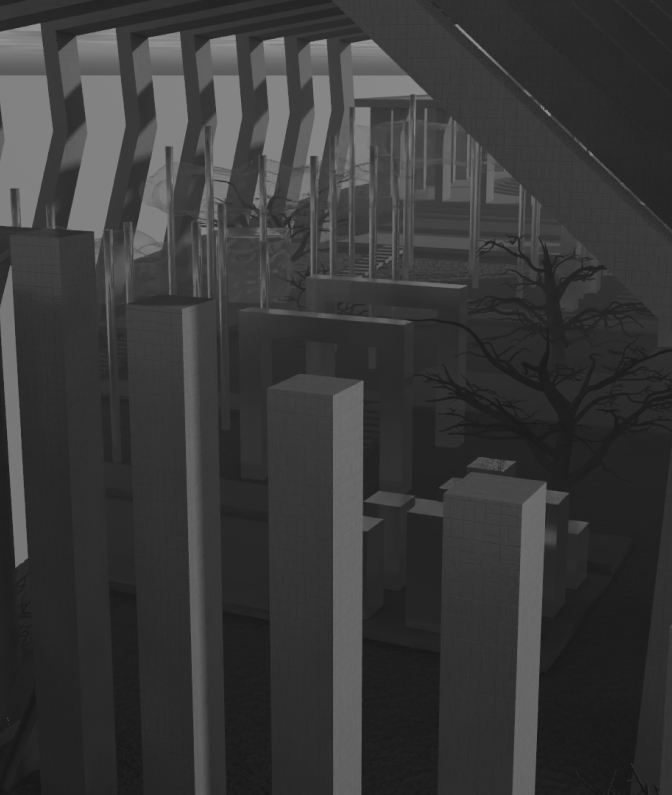

Общественное Пространство

Путь Времени
Путь Времени — это пространство, которое посвящено поиску пути и
истины, выбору и мыслям странника, который хочет открыть себя в
новой реальности.
В этом мире возможно переосмыслить свое прошлое, понять настоящее
и обрести правду в будущем.
 

Врата Времени
Врата времени — это символический вход в данное пространство,
которое воплощает нашу идею пути и выбора в контексте течения
времени.
Это ворота, через которые каждый посетитель может пройти, осознав
важность каждого момента, каждого решения, которые формируют и его
собственную реальность.
Пространство, посвященное пути
и выбору во времени, становится
местом, где можно осязать, слышать
и видеть, как время влияет на
нашу жизнь и какие следы оставляют принятые решения.
Храм Мыслей
Мы все начинаем свой путь в начале, с первых шагов, с первых решений. Вспоминаются моменты, когда казалось, что перед нами бескрайнее поле возможностей. Все время, как мудрый и суровый учитель, быстро научит нас, что не всё, что кажется бескрайним, действительно таково. Оно требует от нас точных решений, требует действий, и эти действия приводят к таким последствиям жизни.
Контакты
Адрес: г. Времени, ул. Пустоты, 5
Номер телефона: +inf 000-11-11
Электронная почта: intime@in.com

Оставить Заявку